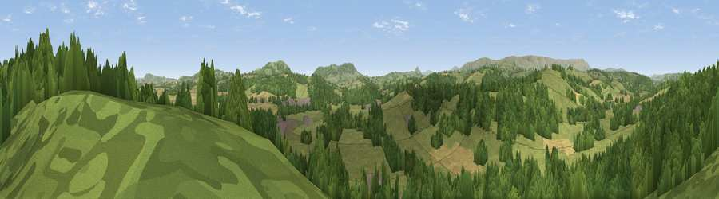

Viewpoint near Abbey Dore
#21515 in England · top 53% of its area beats it · near Abbey Dore · access?Where it is
The exact computed spot (SO 39625 29975). Click the marker for map links.
Public access: no public right of way or access land is recorded at this exact spot — it may be on private land. Computed from Natural England's CRoW access layer and OpenStreetMap rights of way — not the legal definitive map. Always verify locally.
The view, rendered

A 360° render of this exact spot computed from the terrain model, tree cover and land cover — summer colours, afternoon light, calibrated against photographs of famous viewpoints. Real trees, hedges and buildings will differ in detail.
The panorama
Grey silhouette: terrain skyline in each direction (720 bearings, Earth curvature and refraction included). Dashed green: skyline with trees (+15 m) and buildings (+8 m) as obstacles. Blue strip: how far the ground is visible on each bearing.
Where the view opens
Wedge length = distance to the farthest visible ground on that bearing (vegetation-aware). Rings at 10, 25 and 50 km.
What fills the view
47% woodland · 44% grassland · 7% cropland · 1% built-up
Angular shares of the visible panorama (visual magnitude), not map area. Landscape diversity 0.42 (0–1 Shannon).
Key numbers
More beautiful places nearby
The staircase of upgrades: each row has a higher view potential than everything closer. Driving times are estimates from straight-line distance, calibrated against real road routing — check an actual route before setting out.
| Place | Direction | Drive | Score |
|---|---|---|---|
| Viewpoint near Cockyard | N · 3 km | ~8 min | 59.6 |
| Viewpoint near Kentchurch | SE · 3 km | ~8 min | 65.2 |
| Viewpoint near Cockyard | NNE · 4 km | ~9 min | 67.5 |
| Viewpoint near Cockyard | NNE · 4 km | ~9 min | 70.3 |
| Newbarns Hill | NNW · 5 km | ~12 min | 72.8 |
| Viewpoint near Kentchurch | SE · 6 km | ~13 min | 79.3 |
| Garway Hill | SE · 6 km | ~13 min | 84.6 |
| Millennium Hill | ENE · 38 km | ~56 min | 86.9 |
51.96496, -2.88016 · source: screening · position refined by local search. Computed location — check access rights before visiting.